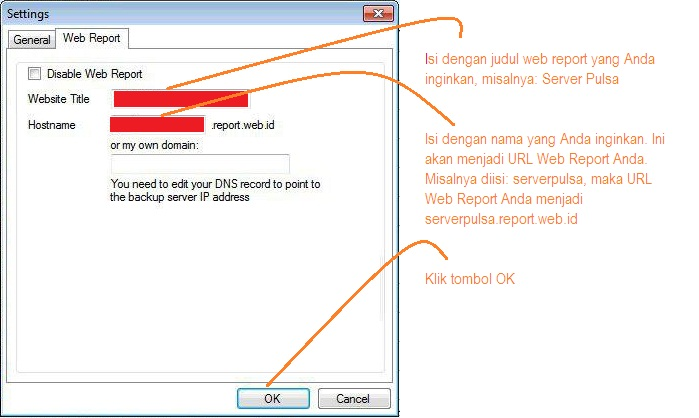

Setting Web Report
Setelah aktivasi layanan Web Report OtomaX langkah selanjutnya ialah mensettingnya sebagai berikut:
- Pastikan telah mensetting Online Backup, kalau belum klik disini.
- Pastikan telah menggunakan modul Online Backup v1.21 atau lebih tinggi, kalau belum download disini, kemudian timpa file Online Backup lama dengan file yang baru Anda download.
- Pastikan layanan Web Report telah Anda aktivasi, kalau belum klik disini.
-
Buka modul Online Backup -> klik 3 tanda titik bertumpuk di sebelah kiri atas -> klik Settings -> klik tab Web Report, kemudian lakukan sesuai petunjuk di gambar bawah ini:

Pada contoh di atas web report dapat diakses dengan mengunjungi URL serverpulsa.report.web.id.
- Selesai.
Apabila Anda ingin mengetahui demo Web Report OtomaX, silahkan klik disini.